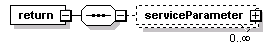
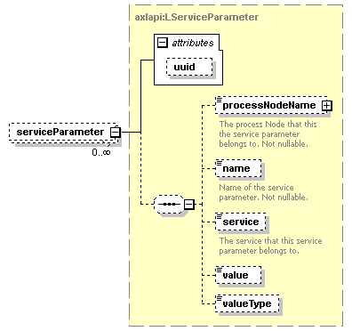

| diagram |  |
||||||||||||
| namespace | http://www.cisco.com/AXL/API/10.5 | ||||||||||||
| type | extension of axlapi:APIResponse | ||||||||||||
| properties |
|
||||||||||||
| children | return | ||||||||||||
| used by |
|
||||||||||||
| attributes |
|
||||||||||||
| source | <xsd:complexType name="ListServiceParameterRes"> <xsd:complexContent> <xsd:extension base="axlapi:APIResponse"> <xsd:sequence> <xsd:element name="return"> <xsd:complexType> <xsd:sequence> <xsd:element name="serviceParameter" type="axlapi:LServiceParameter" minOccurs="0" maxOccurs="unbounded"/> </xsd:sequence> </xsd:complexType> </xsd:element> </xsd:sequence> </xsd:extension> </xsd:complexContent> </xsd:complexType> |
element ListServiceParameterRes/return
| diagram |  | ||
| properties |
|
||
| children | serviceParameter | ||
| source | <xsd:element name="return"> <xsd:complexType> <xsd:sequence> <xsd:element name="serviceParameter" type="axlapi:LServiceParameter" minOccurs="0" maxOccurs="unbounded"/> </xsd:sequence> </xsd:complexType> </xsd:element> |
element ListServiceParameterRes/return/serviceParameter
| diagram |  | ||||||||||||
| type | axlapi:LServiceParameter | ||||||||||||
| properties |
|
||||||||||||
| children | processNodeName name service value valueType | ||||||||||||
| attributes |
|
||||||||||||
| source | <xsd:element name="serviceParameter" type="axlapi:LServiceParameter" minOccurs="0" maxOccurs="unbounded"/> |
XML Schema documentation generated by XMLSpy Schema Editor http://www.altova.com/xmlspy